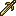

Character Overview
Leif is the Lord character of Thracia 776. He is unique in a sense that he is force deployed in every chapter and is immune
to the "fatigue" status effect. He is available since the beginning of the game.
Leif is considered to be one of the worst lords in the entire Fire Emblem series, which is not a totally inaccurate statement.
Leif's base stats and growths are somewhat mediocre, and his utility in terms of combat, enemy-phasing, and magic is either
also mediocre or basically non-existent.
However, Leif can still become a reliable combat unit because of his massive availability, and Thracia gives its players plenty of
stat-boosting rings during the early game, which can really patch up Leif's disappointing stats.
This does not change the fact that Leif can be RNG screwed in one or more stats, so scrolls are also crucial to Leif's growth.
Base Stats and Growths
| Level 1 Lord | HP | STR | MAG | SKL | SPD | LCK | DEF | CON | MOV |
|---|---|---|---|---|---|---|---|---|---|
| Base Stats | 22 | 4 | 0 | 2 | 5 | 6 | 3 | 5 | 6 |
| Growth Rates | 70% | 35% | 10% | 35% | 40% | 40% | 25% | 15% | 3% |
As mentioned in the overview, Leif's base stats are troubling at best. He can fight semi-reliably in the earlier chapters due to Thracia's laughably weak enemies, but he can quickly fall behind in terms of Strength and Defense because of those pitiful 35% and 25% growths. This is why scroll usage is crucial to Leif's growths, as even a small improvement to his growth rate can drastically alter his level-ups.
Although Leif surely will not be able to one-round anyone in the earlier chapters, he can whittle down an enemy with some chip damage, which I heavily recommend since Leif needs all the EXP he can get. The early chapters are great training chapters for Leif, as they mostly consistent of brigands with low hit rates. Once Leif obtains a few levels with some scroll usage, he can become a reliable fighter.
Other Stats
| Weapon Ranks | Skills | PCC | Leadership Stars | Movement Stars | Promotion Gains |
|---|---|---|---|---|---|
| Sword - C |  Adept Adept |
2 | 0 | 1 | STR/MAG/SKL/SPD/DEF + 1 |
Leif begins with a C rank in Swords, which is a plus due to the many swords that are effective against certain types of enemies, such as Rapiers, Armorslayers, Sleep Edge, etc. He can reliably reach B Rank in Swords very quickly, (as he is a force deploy in every chapter) which can drastically improve his combat utility, since he can wield an Armorslayer from then on. The early chapters in Thracia are heavily populated with armored and calvary units, and with the right equipment, Leif can defend himself quite well.
Leif's promotion isn't until the end of Chapter 18, a very late promotion that is quite common in the series. It's very unimpressive, too, as Leif only gains +1 to the stats mentioned above. He receives no additional weapon ranks and remains an infantry unit. Quite sucky. At least he can gain EXP again!
The Adept skill that Leif begins with can improve his combat potential, but it procs unreliably and should not be depended upon. Leif also has a PCC of 2, but since he lacks any notable skills that grant additional attacks, besides Adept, it's not too impressive. He also has a movement star, so he can move twice with a 3% chance. Solid stats, but nothing noteworthy.
PRF's and Support Bonuses
| Name | Range | Uses | Weight | Might | Hit | Crit | Effects |
|---|---|---|---|---|---|---|---|
| Light Brand  | 1-2 | 60 | 10 | 12 | 80% | 0% | Uses magic damage at range and can be used to restore all HP |
| Bragi Blade | 1 | 60 | 12 | 15 | 70% | 0% | Effective vs. armored units. Grants Miracle and negates Loptyr Sword effects |
The Light Brand is available since the beginning of the game and is very helpful in the early chapters. Its magical damage can bring many enemies close to death in the early game, and later on, if Leif gained some speed, it can double and kill weak enemies with low MAG. It has a tremendous amount of 60 uses, and also functions as a vulnerary! However, it does have a drawback. It has 10 weight, and since Leif begins the game with only 5 strength, he loses all of his 5 speed and essentially attacks with 0 speed in the beginning of the game. Yikes. Despite this, the Light Brand is one of the most useful weapons in the early game, and if you conserve some of its uses, Leif can have a reliable 2 range sword without hogging a valuable Flame Sword.
The Bragi Blade, while not exclusive to Leif, is a great PRF that functions as a better Armorslayer. It has better Mt, better Hit, and grants a commendable skill, Miracle! If your Leif manages to gain great stats by the late game, this is a welcome PRF that boosts Leif's lethality and survivability. Other units can use this weapon, however, and if you find that they can put it to better use than Leif, then give them this reliable PRF.
Supports: Finn - 10%, Nanna - 10%, Eyvel - 10%, Ronan - 10%, Safy - 10%, Dalsin - 10%, Asbel - 10%, Carrion - 10%, Selphina - 10%, Hicks - 10%, Olwen - 10%, Tina - 10%, Miranda - 10%, Linoan - 10%, Xavier - 10%, Sara - 10%
Supported by: Nanna
Character Tips
I've made it clear that Leif is a unit that requires a bit of investment. On his own, his stats won't really go anywhere, so I highly recommend that you give him a one or two stat-boosting rings in the early game to ensure that he can at least hold his own against the early enemies. Specifically, the Life, Def, and/or Spd rings. Don't be afraid to invest in Leif. After all, he needs it.
Leif also benefits from every scroll besides the Odo, Heim, and perhaps the Ullr scroll. He has no need for Mag, Lck, or Skl level-ups since his Lck/Skl growth rates are quite good at 40%, and leveling his Mag is unnecessary. Be sure to swap scrolls around, especially with Leif, to see some good returns on his level-ups.
I would also recommend giving Leif the Kingmaker sword. It grants the Charm skill, and since Leif already supports many characters in the roster, he can heavily boost the avoid of his teammates by simply being near them. Those bonuses stack, and since Leif is going take part in every battle, it's a good idea to use him as a sort of "Charm bot" to boost the avoid of those nearby. This is especially helpful against those pesky ballistae you'll face in the mid-late game.